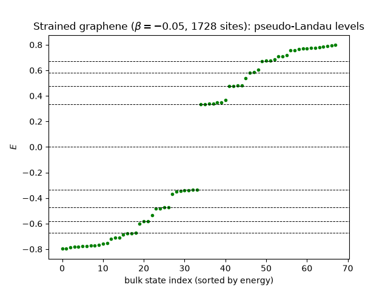
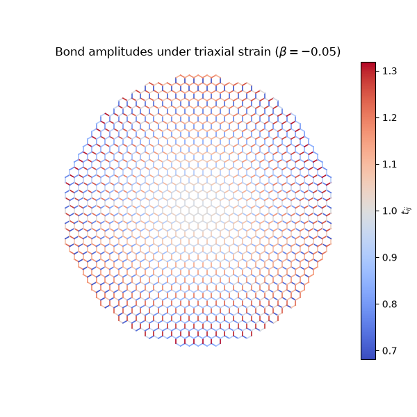

Note
Go to the end to download the full example code.
Strain as a Gauge Field: Pseudo-Landau Levels in Graphene#
Stretching graphene changes its bond lengths, and therefore its hopping amplitudes. Near the Dirac point a smooth modulation of the three nearest-neighbor hoppings enters the Dirac equation exactly the way a vector potential does – it shifts the Dirac point in momentum space – so a strain field whose modulation grows linearly with position acts on the electrons as a uniform magnetic field, and quantizes their spectrum into Landau levels.
set_hop_linear_strain() implements
exactly this linear triaxial strain, setting each nearest-neighbor bond
to
with \(\hat{\boldsymbol\delta}_{ij}\) the bond’s direction and \(\mathbf{r}_{ij}\) its midpoint. Expanding around the Dirac point \(K\) turns this into the symmetric-gauge vector potential \(\mathbf{A} = \tfrac{1}{2}B_s(-y, x)\) with pseudo-field
so graphene’s relativistic Landau ladder (see Landau Levels: Square Lattice vs. Graphene) should appear at
The catch – and the whole point – is that no magnetic field is present. Every hopping stays real, so the Hamiltonian is real, time reversal is unbroken, and the pseudo-field must therefore point the opposite way in the second valley \(K'\). Strained graphene bubbles were measured showing pseudo-fields in excess of 300 T, far beyond any real laboratory field.
import numpy as np
import matplotlib.pyplot as plt
from tbkit.system import System
from tbkit.graphene import GrapheneLattice, GrapheneSystem
t = 1.
v_F = 1.5 * t # Wallace's 1947 result, see plot_graphene_bands
def strained_flake(n, beta):
'''Circular graphene flake, centered on its centroid, under linear strain.
The strain is measured from the coordinate origin, so the flake has
to be centered for the hopping modulation to stay small and
symmetric across it.
'''
lat = GrapheneLattice()
lat.circle(n=n)
lat.coor['x'] -= lat.coor['x'].mean()
lat.coor['y'] -= lat.coor['y'].mean()
gsys = GrapheneSystem(lat)
gsys.set_hop_linear_strain(t=t, beta=beta)
gsys.get_ham()
return lat, gsys
def bulk_states(lat, gsys, frac=0.7, weight=0.55):
'''Boolean mask of eigenstates living mostly in the flake's interior.
A finite flake's boundary carries edge states at every energy, which
would otherwise fill in the Landau gaps; keeping only states with
most of their weight inside *frac* of the radius removes them.
'''
r = np.hypot(lat.coor['x'], lat.coor['y'])
inner = r < frac * r.max()
return gsys.intensity[inner, :].sum(axis=0) > weight
The strained Hamiltonian is real: no field, no broken time reversal#
Unlike the Peierls substitution (see Aharonov-Bohm Ring: A Magnetic Field on a Lattice), which multiplies hoppings by complex phases, strain only rescales them. The Hamiltonian stays real symmetric.
beta = -0.05
lat, gsys = strained_flake(n=30, beta=beta)
print('Flake: {} sites, radius {:.1f}a.'
.format(lat.sites, np.hypot(lat.coor['x'], lat.coor['y']).max()))
print('Hoppings range over [{:.3f}t, {:.3f}t] -- all real, all positive.'
.format(gsys.hop['t'].real.min(), gsys.hop['t'].real.max()))
assert np.allclose(gsys.hop['t'].imag, 0.)
assert np.allclose(gsys.ham.toarray().imag, 0.)
print('Hamiltonian is exactly real: time-reversal symmetry is unbroken.')
Flake: 1728 sites, radius 26.8a.
Hoppings range over [0.681t, 1.319t] -- all real, all positive.
Hamiltonian is exactly real: time-reversal symmetry is unbroken.
The spectrum nevertheless collapses onto a relativistic Landau ladder#
With \(B_s = \beta/2\), the predicted levels are \(E_n = \tfrac32 t\sqrt{\beta n}\). The bulk states bunch onto them to within a couple of percent.
gsys.get_eig(eigenvec=True)
B_s = abs(beta) / 2
bulk = bulk_states(lat, gsys)
en_bulk = np.sort(gsys.en.real[bulk])
print('\nMagnetic length l_B = {:.1f}a for a flake of radius {:.1f}a.'
.format(1 / np.sqrt(B_s), np.hypot(lat.coor['x'], lat.coor['y']).max()))
for n in range(1, 5):
predicted = v_F * np.sqrt(2 * B_s * n)
level = en_bulk[np.abs(en_bulk - predicted) < 0.12 * predicted]
print('n={}: {} bulk states, mean E={:.4f} (predicted {:.4f}, {:+.1f}%).'
.format(n, len(level), level.mean(), predicted,
100 * (level.mean() / predicted - 1)))
assert len(level) >= 2
assert abs(level.mean() - predicted) < 0.03 * predicted
Magnetic length l_B = 6.3a for a flake of radius 26.8a.
n=1: 7 bulk states, mean E=0.3444 (predicted 0.3354, +2.7%).
n=2: 4 bulk states, mean E=0.4788 (predicted 0.4743, +0.9%).
n=3: 4 bulk states, mean E=0.5762 (predicted 0.5809, -0.8%).
n=4: 8 bulk states, mean E=0.6818 (predicted 0.6708, +1.6%).
The spacing is the Dirac one, not the ordinary one#
The telltale signature is the ratio of successive levels: a parabolic band gives equally spaced levels, whereas a Dirac cone gives \(E_n/E_1 = \sqrt{n}\).
levels = np.array([en_bulk[np.abs(en_bulk - v_F * np.sqrt(2 * B_s * n))
< 0.12 * v_F * np.sqrt(2 * B_s * n)].mean()
for n in range(1, 5)])
print('\nE_n/E_1 = {} (sqrt(n) = {}).'
.format(np.round(levels / levels[0], 3), np.round(np.sqrt(np.arange(1, 5)), 3)))
ratios = levels / levels[0]
assert np.allclose(ratios, np.sqrt(np.arange(1, 5)), atol=0.08)
# ...and nowhere near the evenly spaced ladder 1, 2, 3, 4 a parabolic
# band would give.
assert not np.allclose(ratios, np.arange(1, 5), atol=0.5)
E_n/E_1 = [1. 1.39 1.673 1.98 ] (sqrt(n) = [1. 1.414 1.732 2. ]).
The ladder scales as sqrt(strain), exactly as it scales as sqrt(B)#
print()
for b in [-0.04, -0.05, -0.06]:
lat_b, gsys_b = strained_flake(n=30, beta=b)
gsys_b.get_eig(eigenvec=True)
en_b = np.sort(gsys_b.en.real[bulk_states(lat_b, gsys_b)])
predicted = v_F * np.sqrt(abs(b))
e1 = en_b[np.abs(en_b - predicted) < 0.12 * predicted].mean()
print('beta={:.2f}: E_1={:.4f} (predicted 1.5*sqrt|beta| = {:.4f}).'
.format(b, e1, predicted))
assert abs(e1 - predicted) < 0.05 * predicted
beta=-0.04: E_1=0.3143 (predicted 1.5*sqrt|beta| = 0.3000).
beta=-0.05: E_1=0.3444 (predicted 1.5*sqrt|beta| = 0.3354).
beta=-0.06: E_1=0.3738 (predicted 1.5*sqrt|beta| = 0.3674).
Cross-check: the same flake in a real field of the same strength#
A real field of \(B = B_s\) – i.e. \(\alpha = B_s/2\pi\) flux quanta per unit cell – must produce the same ladder, through a Hamiltonian that is complex rather than real.
lat_B, _ = strained_flake(n=30, beta=0.)
mag = System(lat_B)
mag.set_hopping([{'n': 1, 't': t}])
mag.set_magnetic_field(alpha=B_s / (2 * np.pi))
mag.get_ham()
assert not np.allclose(mag.ham.toarray().imag, 0.)
mag.get_eig(eigenvec=True)
en_mag = np.sort(mag.en.real[bulk_states(lat_B, mag)])
predicted = v_F * np.sqrt(2 * B_s)
e1_mag = en_mag[np.abs(en_mag - predicted) < 0.12 * predicted].mean()
print('\nReal field (complex Hamiltonian): E_1={:.4f}; '
'strain (real Hamiltonian): E_1={:.4f}; predicted {:.4f}.'
.format(e1_mag, levels[0], predicted))
assert abs(e1_mag - levels[0]) < 0.03 * predicted
print('Same Landau ladder, with and without breaking time-reversal symmetry.')
Real field (complex Hamiltonian): E_1=0.3359; strain (real Hamiltonian): E_1=0.3444; predicted 0.3354.
Same Landau ladder, with and without breaking time-reversal symmetry.
The pseudo-Landau fan#
fig, ax = plt.subplots()
window = en_bulk[np.abs(en_bulk) < 0.8]
ax.plot(window, 'o', ms=3, color='g')
for n in range(-4, 5):
ax.axhline(np.sign(n) * v_F * np.sqrt(2 * B_s * abs(n)), color='k', ls='--', lw=0.7)
ax.set_xlabel('bulk state index (sorted by energy)')
ax.set_ylabel('$E$')
ax.set_title(r'Strained graphene ($\beta={}$, {} sites): pseudo-Landau levels'
.format(beta, lat.sites))

Text(0.5, 1.0, 'Strained graphene ($\\beta=-0.05$, 1728 sites): pseudo-Landau levels')
The strain pattern itself#
Each bond is colored by its hopping amplitude: the threefold (triaxial) pattern is what makes the pseudo-field uniform.
fig2, ax2 = plt.subplots(figsize=(6, 6))
x, y = lat.coor['x'], lat.coor['y']
amp = gsys.hop['t'].real
norm = plt.Normalize(amp.min(), amp.max())
cmap = plt.get_cmap('coolwarm')
for (i, j, a) in zip(gsys.hop['i'], gsys.hop['j'], amp):
ax2.plot([x[i], x[j]], [y[i], y[j]], color=cmap(norm(a)), lw=1.2)
ax2.set_aspect('equal')
ax2.set_axis_off()
ax2.set_title(r'Bond amplitudes under triaxial strain ($\beta={}$)'.format(beta))
fig2.colorbar(plt.cm.ScalarMappable(norm=norm, cmap=cmap), ax=ax2,
fraction=0.046, label='$t_{ij}$')

<matplotlib.colorbar.Colorbar object at 0x1177ba3c0>
Total running time of the script: (0 minutes 6.578 seconds)